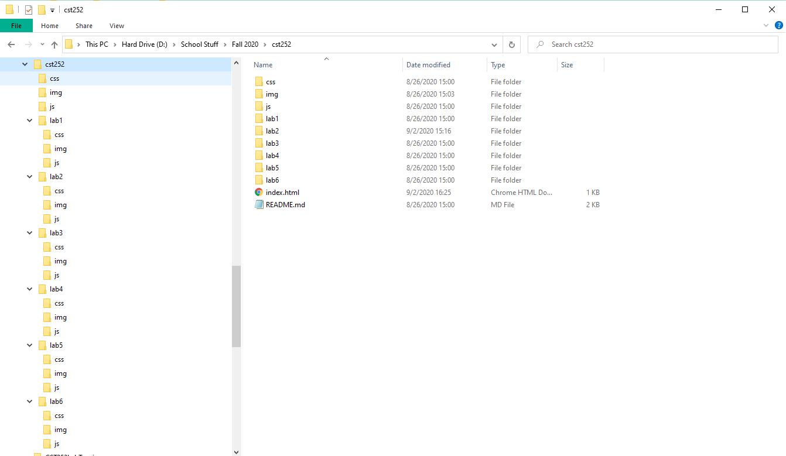

File Structure and File Transfer
In this lab, we look at how we publish our local files to a server, as well as how the directory should look like within our respective file systems.
Challenges
A couple challenges I faced was making sure that some of the tags had communicated how I wanted to, and getting used to the new shortcut feature. For example, if I wanted to list (li) withing a link (a), I might have to manually type one of the tags out.
Results
Here are the results of this Lab!
